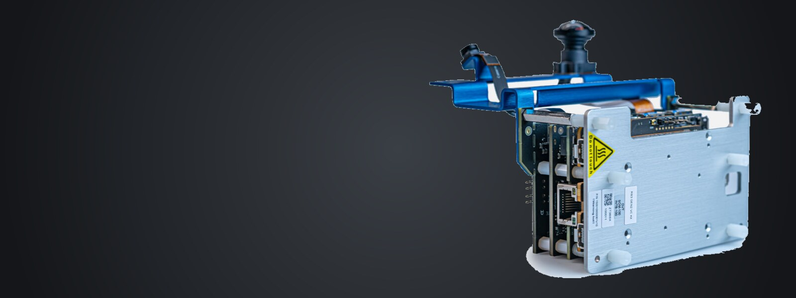

Open Boot FirmwareRB3 Gen2 Development Kit — QCM6490 / QCS6490
OP-TEE on Qualcomm Kodiak
A build system for OP-TEE on the Qualcomm RB3 Gen2 (QCM6490 / QCS6490) to enable TZ open firmware development.
Note: This is an active development build system; interfaces,
manifest revisions, and flash procedures may change.
When this documentation and
kodiak.mk disagree, trust the makefile.